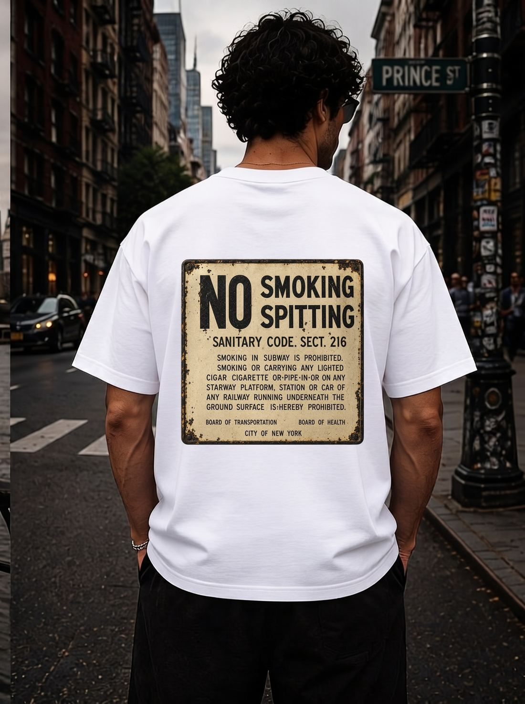

Vintage NYC subway tee for everyday streetwear
Throw it on with denim or cargos for an easy New York streetwear look that nods to old-school subway culture.

Limited Edition · FLYLYFE · EST. 2007
Vintage NYC Subway Sign Tee · Limited Edition
The Sanitary Code Tee is a limited-edition New York concept piece inspired by vintage city signage: No Smoking, No Spitting, Sanitary Code Sect. 216.
$49.99 USD
Colors: White · Sizes: S–3XL · Comfort Colors 1717 heavyweight, garment-dyed · DTF-printed to order in Los Angeles, USA · Tagless printed neck label
LOADING LIVE COLOR, SIZE, ADD TO CART, AND CHECKOUT OPTIONS…
Throw it on with denim or cargos for an easy New York streetwear look that nods to old-school subway culture.
The rusted Sanitary Code sign makes it a talking piece for anyone who loves vintage New York City signage and transit history.
FLYLYFE is a New York City house-music brand, so this tee fits right in on late nights out, warehouse parties, and festival weekends.
Because it's a limited drop, it makes a standout gift for anyone who loves NYC, house music, or vintage graphic tees.
Premium cotton streetwear fit, sizes S–3XL. True to size with a relaxed drop.
Comfort Colors 1717 heavyweight, garment-dyed, 100% ring-spun cotton — chosen for streetwear structure, print clarity, and day-to-night wear. DTF transfer print made to order in Los Angeles, USA, with a tagless printed inside-neck label.
A conversation piece for NYC streetwear collectors and fans of vintage city graphics.
It's a unisex cut printed on the heavyweight Comfort Colors 1717 blank and offered in sizes S to 3XL. The garment-dyed cotton gives it a relaxed, substantial feel, so order up if you like extra room.
Every FLYLYFE tee, including this one, is printed on the Comfort Colors 1717 — a heavyweight, garment-dyed, 100% ring-spun cotton blank with a tagless printed inside-neck label.
The vintage subway sign is applied with a durable DTF transfer and each tee is printed to order in Los Angeles, USA. Production takes about 7 to 10 business days.
US shipping is a flat $4.75 and free when you order 2 or more items. International shipping is a flat $19, and FLYLYFE ships worldwide.
Yes. It's a limited-edition FLYLYFE drop in white only, sizes S to 3XL, priced at $49.99. Once it sells out it may not return.
FLYLYFE ships worldwide — international rates are shown at checkout. US shipping is a flat $4.75, and orders of 2 or more items ship free automatically. Every tee is printed to order; production typically takes 7–10 business days before it ships.
Every FLYLYFE tee is printed to order. Unworn, unwashed tees in original condition can be returned within 30 days of delivery for an exchange or refund — email hello@flylyfe.com to start a return.
Wash cold inside-out and tumble dry low to preserve the print and garment color.
Complete the fit — pair it with the NYC subway Token Tee, our classic house music graphic tee, and the NYC Coordinates Tee.